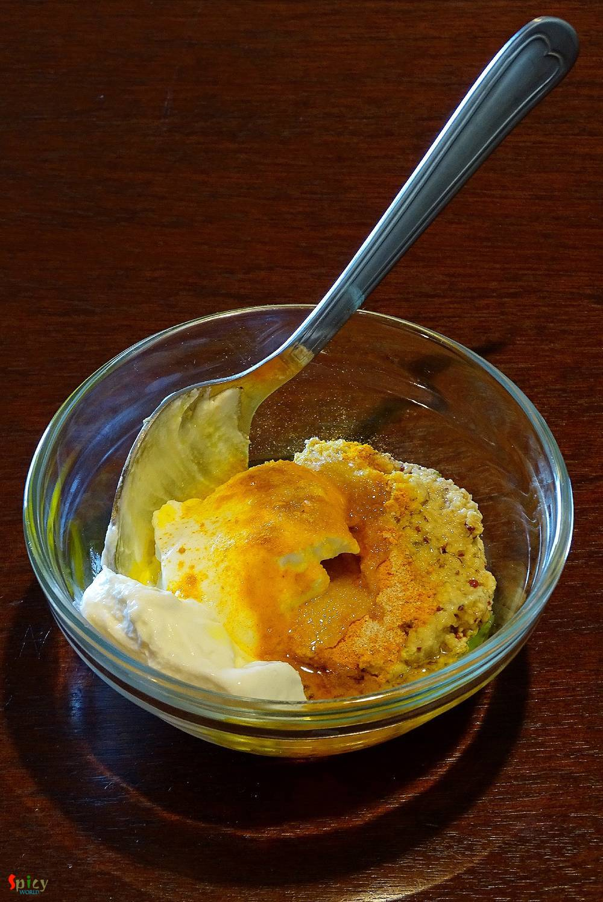

Simple and Easy Recipes
Begun Basanti / Eggplant in Mustard sauce
© 2016 Spicy World, Published on: Apr 13, 2016
This is a very typical Bengali veg dish which you can only enjoy with steamed rice. We, bongs, have a very strong connection with 'posto' / poppy seeds and 'shorshe' or mustard seeds. We can creat so many delicious items with these two simple things. Now, 'he' is not a fan of eggplant, except fried version, to feed him this particular vegetable is really painful. I always have to make special dishes with eggplant, otherwise I end up eating all the eggplant and he finishes up rest of the curry, horrible ! So, last week I made this 'begun basonti' and do you know what happened ? He didn't make any fuss and finished up everything with a smile ... yaayy ! The taste of this eggplant gravy came out really good and I will make it again.

Ingredients
- 8 - 10 semi thick circles of eggplant.
- 2 Tablespoons of black and yellow mustard paste.
- 3 Teaspoons of curd.
- 1 Teaspoon of turmeric powder.
- Pinch of nigella seeds / kalojeera.
- 3 - 4 green chilies.
- Salt and sugar.
- Half cup of mustard oil.
- Warm water.

Steps
To make the mustard paste, soak same proportion of black and yellow mustard seeds in water for an hour, then grind them with some salt, water and green chilies.
Take 2 Tablespoons of that mustard paste, curd, half Teaspoon of turmeric powder, half Teaspoon of mustard oil, some salt and half Teaspoon of sugar. Mix it well and keep aside.
Marinate the eggplant with some salt and turmeric poowder. Then fry them in hot oil till golden in colour.
After that heat 2 Tablespoons of mustard oil in a pan.
Saute nigella seeds and green chilies in hot oil for few seconds.
Now add that curd and mustard mixture into the hot oil. Cook well for 5 - 7 minutes.
Now add the fired eggplant, salt and very little warm water. Mix gently and cook for 5 minutes, then turn off the heat.
Lastly sprinkle little mustard oil all over it.
Let it rest for few minutes then serve.
Your begun basonti is ready.
Serve this hot with steamed rice.
")